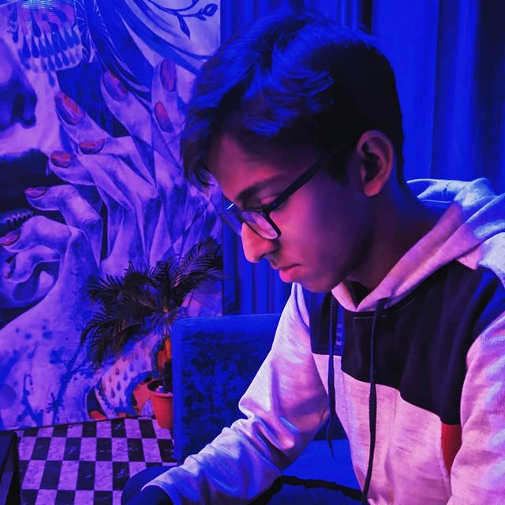

I am Parth Rastogi, I hail from shahjahanpur, which is a small district in Uttar Pradesh, India. I am third year student at Indian institute of management, Rohtak. I am pursuing Integrated program in Management.

We've all got both light and dark inside us. What matters is the part we choose to act on. That's who we really are.
Sirius Black
About Me
- Interests
- I find domains of Philosophy and Psychology genuinely intriguing
- Career Goals
- My short term career goal is to work on softwares like Tableau and SPSS, as well as to improve my communication skills. While the long term goal is embedded in a much coveted dream of mine of becoming a socially responsible and disciplined manager.
- Hobbies
- I am a huge badminton fanboy, I've played badminton for past 5 years of my life and I've relished every bit of that time. Apart from badminton, I've recently developed a great proclivity for frisbee as well.